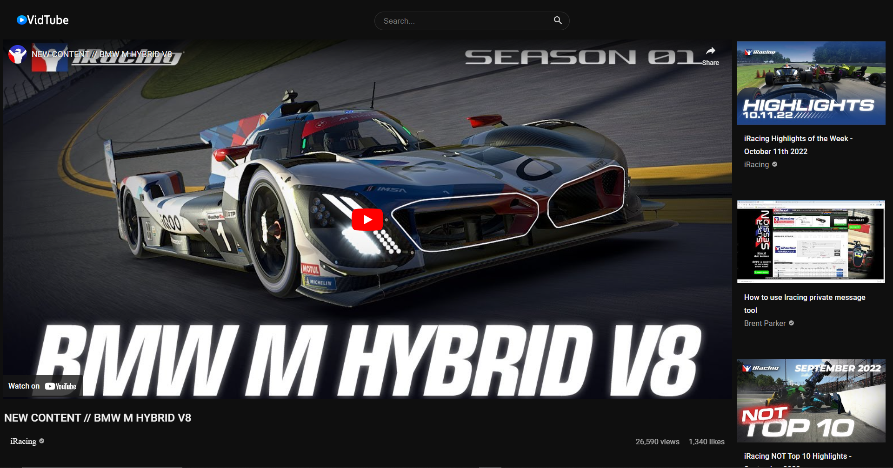
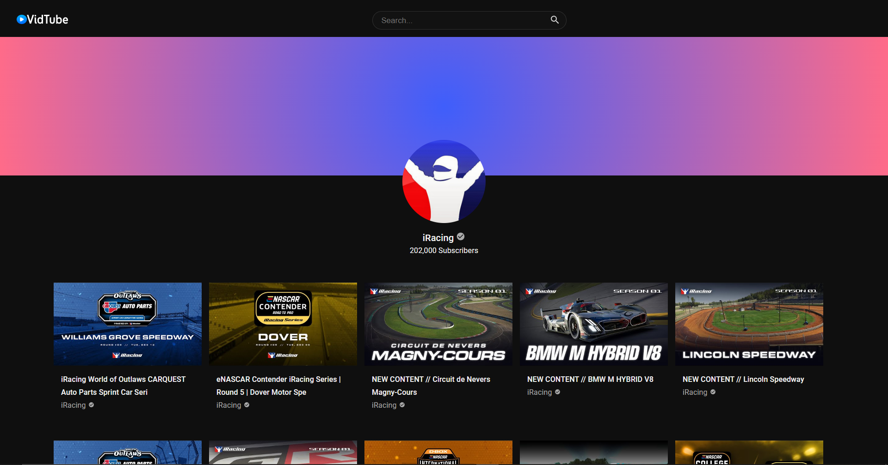
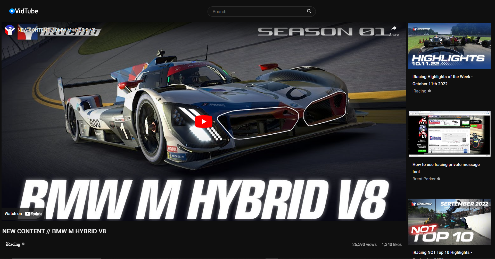
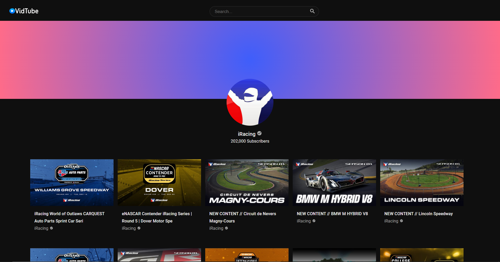

This website is a video search engine based on Youtube.com. I recreated the popular UI Features
such as the lefthand sidebar, and scrollable top sidebar which is used for smaller screens.
For this project I utilized Adobe Illustrator, HTML, CSS, React and Javascript. I also used
the MUI library to provide styles and icons, and utilized the Youtube v3 API to generate information
from Youtube.com such as search functionality, video names, channel views, and much more.
Features
• Search for videos in the serachbar with any keyword.
Results are generated from Youtube.com.
• View individual videos displayed using React Player.
• View recommended videos through scrollable sidebar when watching videos.
• Search and view videos from individual Youtube channels.
• View accurate video and channel statistics such as view, subscriber, and like count.
 


